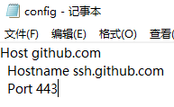
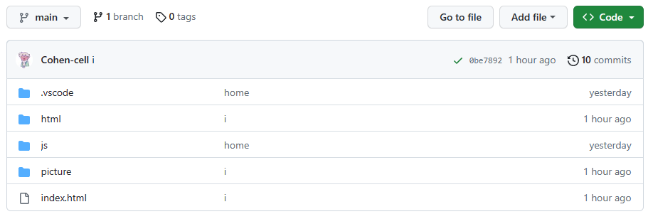

3. blog搭建-使用VScode上传项目到github
具体操作请看
https://blog.csdn.net/m0_51185558/article/details/126181439
软件下载可以看康老师的
康老师网站里有快速下载包
出错解决环节
在跟着CSDN教程做到在vscode终端输入ssh -T git@github.com时
出现ssh:
connect to host github.com port 22: Connection refused
原因是从22端口访问git.hub被拒绝
解决方法：从443端口访问
使用此方法前建议先输入ssh -T -p 443 git@ssh.github.com测试
如果输出结果不再提示connection refused再进行以下操作
C:\Users\pc\.ssh
打开ssh文件夹，复制id_rsa.pub文件，更名为congig
用记事本打开config，Alt+A删除全部内容，将以下内容替换进去
Host github.com
Hostname ssh.github.com
Port 443

修改完后再次输入ssh -T git@github.com
显示
Hi xxxxx! You've successfully authenticated, but GitHub does not
provide shell access.
则代表成功
此时可继续跟着CSDN教程操作
提示
在上传项目到github之前请先检查自己项目文件夹设置的合理度
一定要把主页命名为index.html然后放在根目录
放在其他目录是无法生成网页链接的

如果放错了，不熟悉git的小伙伴也请不要在github上直接进行修改
可以先在本地改完之后再同步到github
直接在github仓库上修改，下次再同步时候会出现一个关于“合并”的错误
以上操作全部完成后，以后每次在本地对网站进行修改，都可以通过VScode同步到github，很方便！